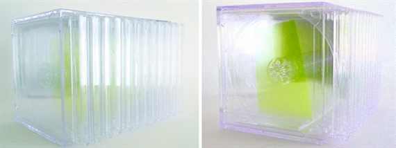

The Present
Following the Black Arts Movement a number of black artists traversing the diaspora have continued and expanded upon the work of black abstractionists creating pieces distincly their own.

"Julie Mehretu, Stadia II, 2004"
"Jennie C. Jones, 12 from 1971: Dual Unity, Facing You..., 2010"